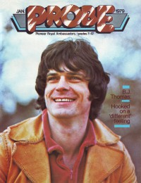

B. J. Thomas
|  |
| January 1979 Probe |
 |
| March 1982 CCM |
Media coverage:
- May 1977 in Radix "Home Where He Belongs", by Paul Baker
- 3 Jun 1977 in Christianity Today "Refiner's Fire: A Star Is Reborn", by Cheryl A. Forbes
- Jul 1977 in Group "Fantastic Testimonies", by Lee Sparks
- Aug 1977 in Christian Life "Growin' Where I'm Planted", by Merle Dautery
- Nov 1978 in Campus Life "Spotlight: B. J. Thomas"
- Dec 1978 in CCM "B. J. Thomas"
- Jan 1979 in Christian Herald "The Repentance of a Pop Singer", by David Kucharsky
- Jan 1979 in Probe "B. J. Thomas' New Triumphs", by Jerry Schaeffer
- Mar 1979 in CCM "Growing Together Though Apart", by Gloria Thomas
- Apr 1979 in The Saturday Evening Post "How Sweet It Is", by B. J. Thomas
- Aug 1980 in CCM "B. J. Thomas"
- Jul 1981 in Christian Herald "Gospel Music Branches Out", by Corinne Ipavich
- Sep 1981 in Campus Life "Interview: Addicted To Mediocracy", by Jim Long
- Dec 1981 in CCM "People & Places: B. J. By The Beautiful Sea"
- Mar 1982 in CCM "Cover Feature: B. J. Thomas' View From The Stage", by Karen Marie Platt
- Mar 1982 in CCM "Editor's Corner: A Sensitive Issue", by John W. Styll
- May 1982 in Christian Life "People & Events: B. J. Cops Fifth Gospel Grammy"
- Jul 1982 in Charisma "Charisma Music's Top 100"
- Oct 1982 in CCM "Cool Crowds Fuel Hot Tempers"
- Apr 1983 in Christian Life "Choice: Films: Nothin' Could Be Better"
- Jul 1983 in CCM "B. J. Thomas"
- Aug 1984 in The Wittenburg Door "Loser of the Month: B.J. and the D.J."
- Aug 1991 in CCM "John Fischer: Baby Baby", by John Fischer
- May 1997 in New Man "Close Up: B. J. Thomas", by Rick Brunson
- May 1997 in CCM "On The Beat: Flashback", by Derek Wesley Selby
- Jun 1997 in CCM "Rewind: Just Can't Help Believin'", by Steve Rabey
- Jul 1998 in CCM "Don't You Forget About Me: B. J. Thomas"
Albums & reviews:
1977: Home Where I Belong
1980: For The Best
1981: Amazing Grace
1989: Midnight Minute
1995: Precious Memories
1997: Christmas is Coming Home
- Jun 1977 in Campus Life, by Steve Lawhead
- Oct 1977 in Group, by Lee Sparks
- Nov 1978 in Charisma, by Carol Dulgar
- Feb 1979 in Campus Life, by Steve Lawhead
1980: For The Best
- May 1980 in CCM
- Jun 1980 in Charisma
- Nov 1980 in Charisma
- Dec 1980 in Christian Herald, by Ron R. Lee
- Nov 1980 in CCM
- Mar 1981 in Christian Herald, by Ron R. Lee
1981: Amazing Grace
- Oct 1981 in CCM, by Carolyn A. Burns
- Jan 1983 in Campus Life, by Jim Long
- Feb 1983 in Charisma, by Chris Maxwell
- Mar 1983 in Christian Herald, by Ron R. Lee
- Jun 1982 in CCM, by Karen Marie Platt
- Jul 1982 in Campus Life, by Jim Long
- May 1983 in MusicLine
1989: Midnight Minute
1995: Precious Memories
1997: Christmas is Coming Home
- Nov 1997 in CBA Marketplace, by Steve Parolini
- Dec 1997 in CCM, by Lucas W. Hendrickson
- Jun 1997 in CCM, by Derek Wesley Selby
Award Summary (Nominations / Wins)
Dove Awards- 1977 Dove Awards
- Album by a Secular Artist: Home Where I Belong
- Album by a Secular Artist: You Gave Me Love (When Nobody Gave Me a Prayer)
- Album by a Secular Artist: Amazing Grace
- Album by a Secular Artist: Miracle
- Album by a Secular Artist: Peace in the Valley
- Album by a Secular Artist: Love Shines
- Album by a Secular Artist: The Best of B.J. Thomas Vol. II
- 1977 Grammy Awards
- Best Inspirational Performance: "Home Where I Belong"
- Best Inspirational Performance: "Happy Man"
- Best Inspirational Performance: "You Gave Me Love (When Nobody Gave Me A Prayer)"
- Best Inspirational Performance: "Amazing Grace"
Books about B. J. Thomas
- "B. J. Thomas" in The Encyclopedia of Contemporary Christian Music (Mark Allan Powell, 2002)
Published articles:
© 2011 CMnexus. Last updated September 2019. Contact: editor -AT- cmnexus -DØT- org About